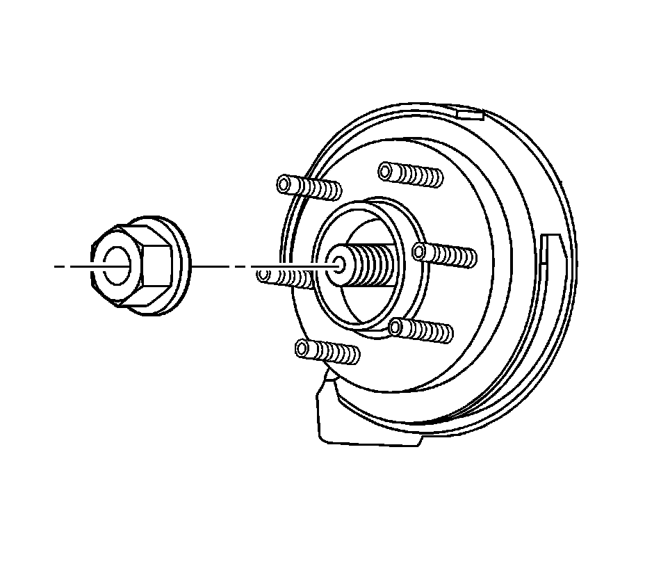
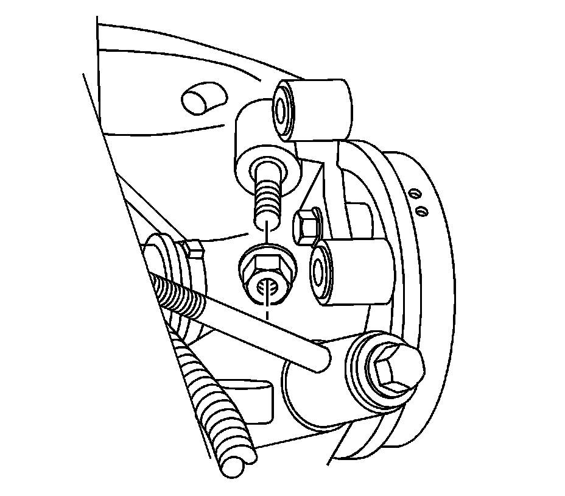
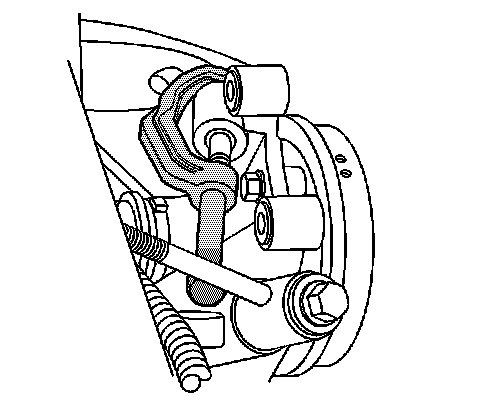
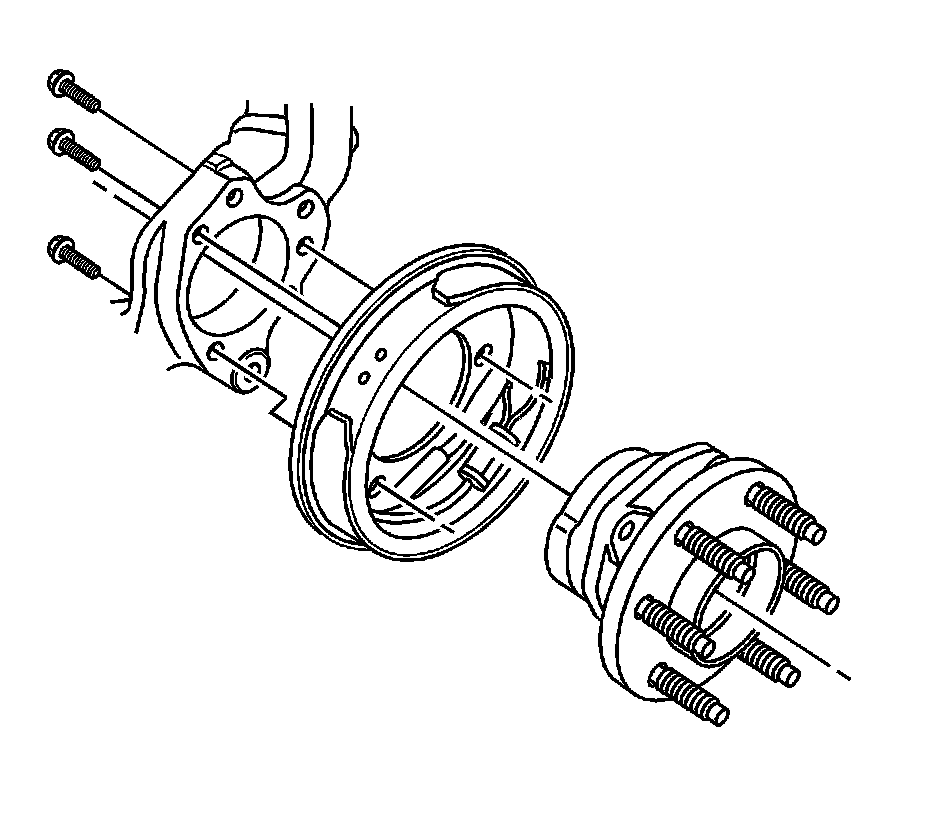
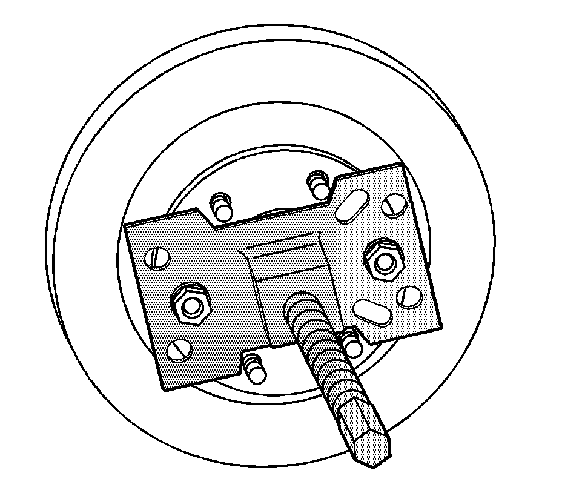

Rear Suspension
Rear Wheel Bearing and Hub Replacement
Tools Required
* J 45859 Wheel Hub Remover
* J 43631 Ball Joint Remover
Removal Procedure
1. Raise and support the vehicle. Refer to Lifting and Jacking the Vehicle (Service and Repair) .
2. Remove the tire and wheel. Refer to Tire and Wheel Removal and Installation (Service and Repair) .
3. Remove the rear brake rotor. Refer to Rear Brake Rotor Replacement (Service and Repair) .

4. Disconnect the wheel speed sensor electrical connector.
5. Disconnect the wheel speed sensor electrical connector from the backing plate.

6. Remove the wheel drive shaft retaining nut and discard.

7. Carefully remove the upper control arm to knuckle retaining nut.

8. Using J 43631 carefully separate the upper control arm from the knuckle.

Notice: Avoid tool contact to the outer constant velocity boot seal when removing the wheel bearing mounting bolts. Failure to observe this notice may result in damage to the CV boot.
9. Carefully remove the wheel bearing/hub retaining bolts.

10. Install J 45859 ,Snap-on - CJ129 Universal Hub Puller, OTC - 7394 Universal Hub Puller, or equivalent to the vehicle.
11. Using J 45859 , Snap-on - CJ129 Universal Hub Puller, OTC - 7394 Universal Hub Puller, or equivalent, carefully separate the wheel driveshaft from the wheel bearing/hub.
12. Remove the wheel bearing/hub from the vehicle.
Installation Procedure
Notice: Avoid tool contact to the outer constant velocity boot seal when removing the wheel bearing mounting bolts. Failure to observe this notice may result in damage to the CV boot.
1. Install the wheel bearing/hub to the vehicle.
Notice: Refer to Fastener Notice (Fastener Notice) .
2. Install the wheel bearing/hub retaining bolts.
Tighten the bolts to 125 N.m (92 lb ft).
3. Install the upper control arm to the knuckle. Refer to Upper Control Arm Replacement (Upper Control Arm Replacement) .
4. Install a new wheel drive shaft retaining nut.
Tighten the nut to 160 N.m (118 lb ft).
5. Install the brake rotor. Refer to Rear Brake Rotor Replacement (Service and Repair) .

6. Connect the wheel speed sensor electrical connector to the backing plate.
7. Connect the wheel speed sensor electrical connector.
8. Install the tire and wheel. Refer to Tire and Wheel Removal and Installation (Service and Repair) .
9. Lower the vehicle.